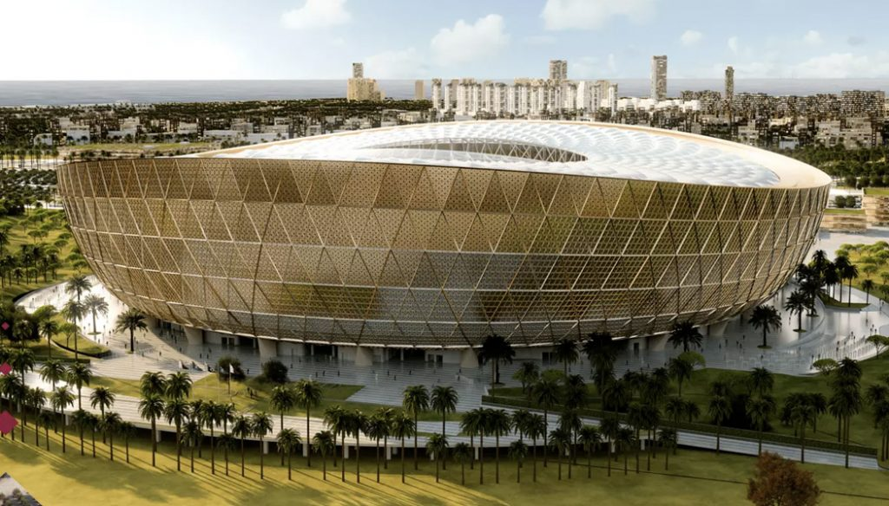
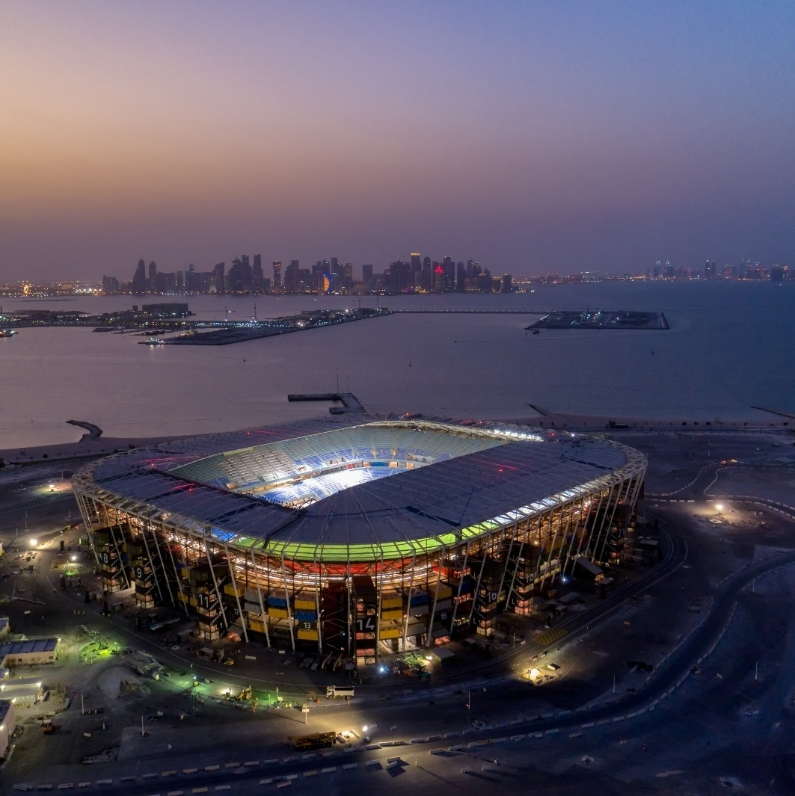

Brasil na Copa do Mundo 2022
24/11 - Brasil x Sérvia - 16h (de Brasília)
A Seleção Brasileira começa a caminhada rumo ao Hexa contra a Sérvia no dia 24 de novembro,
uma quinta-feira, às 16h (de Brasília), no Estádio Nacional de Lusail.

28/11 - Brasil x Suíça - 13h (de Brasília)
O segundo jogo do Brasil na Copa é contra a Suíça, no dia 28 de novembro,
uma segunda-feira, às 13h (de Brasília), no Estádio 974.

02/12 - Camarões x Brasil - 16h (de Brasília)
O Brasil encerra sua participação na fase de grupos contra o Camarões, no dia 2 de dezembro,
uma sexta-feira, às 16h (de Brasília), no Estádio Nacional de Lusail.